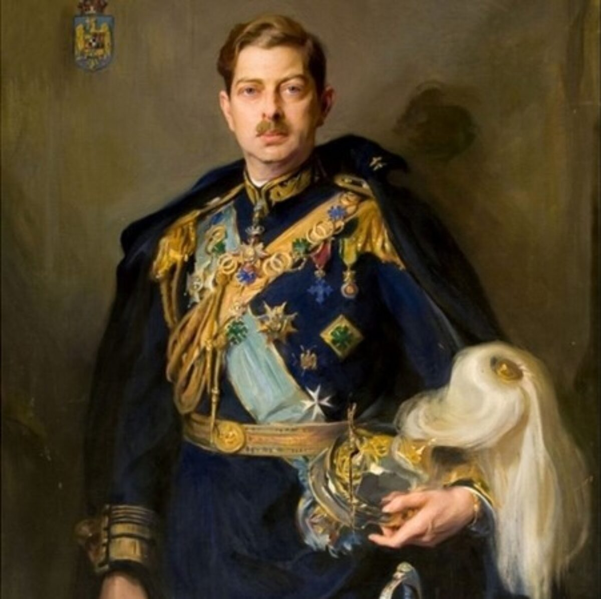

Moartea
Carol al II-lea a murit la 4 aprilie 1953 în Portugalia, la vârsta de 59 de ani, în urma unui atac de cord. Deși trăise o viață plină de controverse și decizii politice discutabile, moartea sa a atras atenția multor capete încoronate din Europa. Funeraliile au avut loc la Lisabona, la 7 aprilie, în prezența unor figuri importante ale aristocrației europene.
Guvernul comunist al României, condus de Gheorghe Gheorghiu Dej, nu a trimis niciun reprezentant, iar fiul său, Regele Mihai I, a ales să nu participe. Carol a fost înmormântat lângă Panteonul regilor Portugaliei din mănăstirea São Vicente de Fora.
Posteritatea
Pe 13 februarie 2003, rămășițele lui Carol al II-lea au fost aduse în România și depuse într-o criptă specială la Mănăstirea Curtea de Argeș. Această ceremonie a marcat o reabilitare simbolică a memoriei sale în istoria României, chiar dacă opinia publică și istoricii sunt încă împărțiți în privința domniei sale.

În 2019, osemintele lui Carol al II-lea au fost mutate în Necropola Regală din Noua Catedrală Arhiepiscopală de la Curtea de Argeș, unde se odihnesc și Regele Mihai I și Regina Ana. Elena Lupescu, iubita sa controversată, a fost înmormântată separat, într-un alt cimitir.
Informații suplimentare
- Carol al II-lea a fost primul rege al României care a abdicat de două ori.
- Este cunoscut pentru „camarila regală” – un cerc de influență neoficială care a dus la corupție și nemulțumiri în rândul populației.
- Relația sa cu Elena Lupescu a provocat numeroase conflicte politice și critici din partea elitei românești și bisericii.
- A introdus un regim autoritar în 1938, desființând partidele politice.